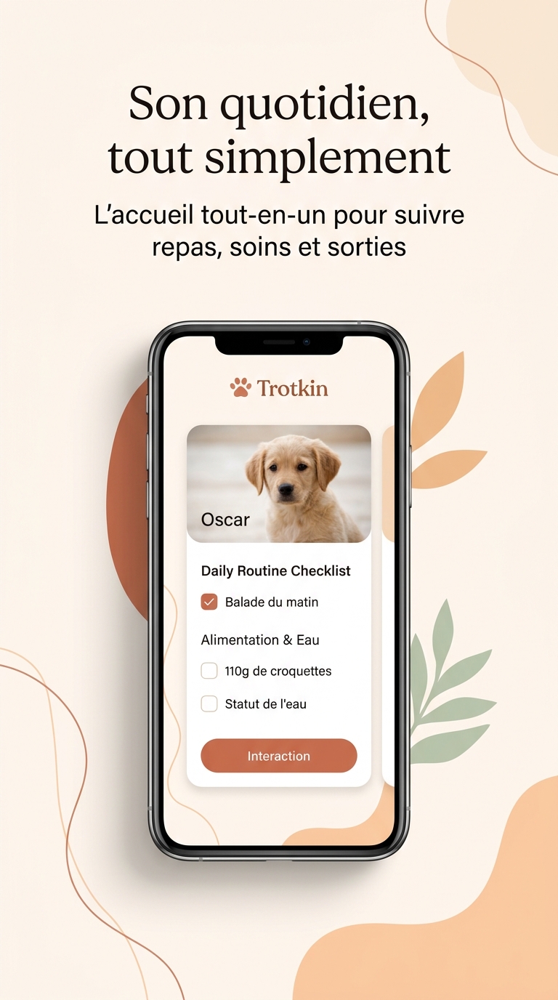
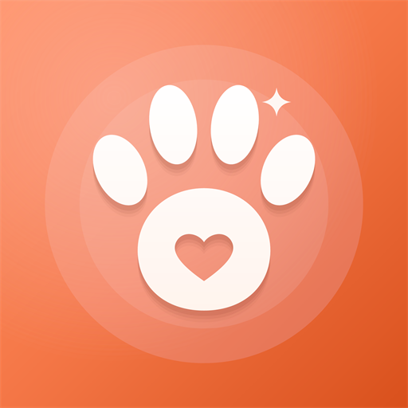

Trotkin : L'application de suivi chien, propreté chiot & carnet de santé en famille
Ne demandez plus jamais « Quelqu'un a-t-il déjà nourri ou sorti le chien ? ». Suivez les balades quotidiennes, l'apprentissage de la propreté du chiot, les repas, l'eau fraîche et le carnet de vaccination—synchronisés en temps réel avec votre famille et dog-sitter.

Suivi des besoins pipi/caca dehors & courbes sur 7 et 30 jours
Balades, rations croquettes, eau (ml), poids & carnet de vaccins
Synchronisation temps réel entre famille, proches et dog-sitter
Application Android gratuite avec synchronisation cloud automatique
Tout pour le suivi quotidien de votre chien, la propreté du chiot et son carnet de santé
Du journal des besoins et balades en un geste jusqu'au Cercle de Garde familial partagé et aux rappels de vaccins vétérinaires.
Suivi propreté chiot & journal des balades
Enregistrez les promenades, pipis, cacas et petits accidents intérieurs en une seconde. Suivez le taux de réussite dehors, la qualité des selles et les statistiques comportementales sur 7 et 30 jours.
Carnet de vaccination numérique & santé vétérinaire
Conservez dates de vaccins (DHPP, Rage, Toux du chenil), numéros de lot, courbe de poids, vermifuges et allergies avec rappels automatiques de boosters et vétérinaires à proximité.
Rations alimentaires, repas & suivi d'hydratation (ml)
Notez croquettes, pâtée et friandises au gramme près avec marques, calories et rappels de repas. Suivez la gamelle d'eau fraîche quotidienne (ml) et localisez les animaleries proches.
Cercle de Garde familial partagé & statistiques
Invitez vos proches, colocataires ou dog-sitters via @handle avec des rôles sur-mesure (Co-Gardien, Dog-Sitter, Observateur). Gérez plusieurs chiens avec synchronisation hors-ligne automatique.
Application de suivi quotidien du chien : Balades, Besoins, Repas & Vaccins en un clic
Chaque écran est conçu pour enregistrer une promenade, un besoin du chiot, une portion de croquettes ou un rappel vétérinaire d'une seule main, même hors-ligne.
Balade parc
30 min · Réussi dehors
Croquettes chiot
80 grammes
Ultra Croquettes Bio
Spécial croissance chiot
Poids actuel
6.8 kg (+400g)
Bannières adaptatives respectueuses du flux et 100% dédiées à l'univers canin (soins vétérinaires certifiés, nutrition de qualité). Zéro pop-up intrusif, zéro vidéo forcée, avec respect strict du RGPD et des données familiales.
Pourquoi les familles et propriétaires de chiens choisissent Trotkin
Des avis authentiques sur le suivi de la propreté du chiot, le carnet de vaccination numérique et le partage familial avec dog-sitter.
« Trotkin a sauvé notre parquet ! Dès qu'on a suivi le rythme des sorties suggéré, notre petit golden a compris où faire ses besoins. En deux semaines, quasiment plus aucun oubli à l'intérieur. »
« L'interface est apaisante et sans publicité agaçante. Pour noter les vaccins et vérifier l'évolution du poids avant le véto, c'est l'application la plus soignée du Play Store. »
« Enregistrement en un éclair d'une main pendant que je tiens la laisse de l'autre. Les conseils d'éducation sont d'une rare bienveillance. Un vrai plaisir au quotidien. »
FAQ : Application de suivi chien, propreté chiot, carnet de vaccins & Cercle de Garde

Téléchargez Trotkin : Suivi Chien, Propreté Chiot & Carnet de Santé
Installez gratuitement Trotkin sur Google Play Store pour suivre les balades, les besoins du chiot, les repas, l'eau fraîche et le carnet de vaccination en famille.